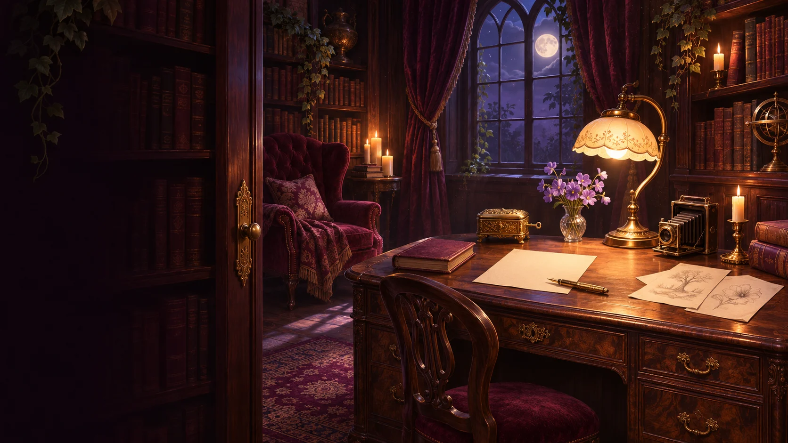

Beyond the Fifth Door
The Author’s
Hidden Room
Checking your journey…

A secret, finally yours
The Author’s
Hidden Room
Every story leaves
a door open.
The keeper of secrets
Gizmo, Guardian of Forgotten Words
Tap Gizmo to say hello. He might have something to tell you.
PHASE III · THE LIVING LIBRARY
The library has secrets of its own.
Listen for a whisper, examine the locked drawer, and let Gizmo help you discover the hidden word.
The library is waiting. Choose an object to begin.
“Not every locked thing is meant to stay closed. Some stories wait for the right voice.”
On the writing desk
A little closer to the author.
Open each object. Take your time.
Between the lines
The Author’s Journal
Four songs, kept among these pages. Open the journal and follow the words.
Stories in development. Titles and inspirations are shared here; publication details will come later.
Outside this room
Follow another thread.
More of Bre’s creative world.
A keepsake for the curious